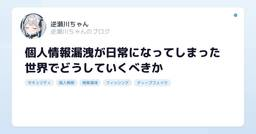

セキュリティ直近7日・スコア順
このトピックだけを購読する: RSS

Telegram Desktop vulnerability allowed any user's file to be stolen beaksec.github.io（Hacker News）
beaksec.github.io（Hacker News）
HN 397pt
セキュリティ
An unescaped separator in Telegram Desktop’s single-instance IPC lets one clicked link read arbitrary files off the disk and send them to the attacker, session files included.
20時間前

「お前たちのクラウドはわれわれのもの」 IDCFクラウドの管理画面に出た攻撃者のメッセージ 内容に運営元は 101
101
はてブ101
itmedia.co.jp（ITmedia NEWS）
セキュリティ
ランサムウェア攻撃を受けた「IDCFクラウド」を巡り、攻撃者を名乗る人物のメッセージが管理コンソールに表示されたとする画像が、10月7日からX上で拡散している。画像には、攻撃者によるものとみられる英語のメッセージや、被害規模を示す具体的な数字が記されている。ITmedia NEWSは運営元のIDCフロンティアに、画像の内容について運営元のIDCフロンティアに聞いた。
20時間前

国内で相次ぐ不正アクセスに対する注意喚起についてまとめてみた - piyolog 166 piyolog.hatenadiary.jp（はてな IT人気）
piyolog.hatenadiary.jp（はてな IT人気）
はてブ166
セキュリティ
2026年10月7日から9日にかけて、個人情報保護委員会、JPCERT/CC、国家サイバー統括室、IPAなどの各機関が、国内組織で相次ぐ不正アクセスによる個人情報の漏えいを受けた注意喚起を公表しました。ここでは関連する情報をまとめます。 BIツールや従業員向けシステムも被害に JPCERT/CCは10月8日に公開した注意喚起で、「2026年9月前後」に国内組織で不正アクセスによる個人情報等の漏えい被害が相次いでいるとした。複数の製品やサービスで被害が発生している中、「技術的な情報の共有が不足しており、把握している情報は限定的かつ断片的」とも記している。同注意喚起は、普段から断続的、散発的に発生…
8時間前

個人情報漏洩が日常になってしまった世界でどうしていくべきか 155
はてブ155
nyosegawa.com（はてな IT人気）
セキュリティ
2026年は大規模な個人情報の漏洩が続いています。いま何が流出しているのか、流出した情報でどんな連絡が届くのか、わたしたちは何をすればいいのかを、グラフと例でまとめます。
16時間前

Launching an opt-in vulnerability-finding service for open-source software 21 Anthropic Research
Anthropic Research
はてブ21 · 新しく出た
AI・LLM / セキュリティ
We’re launching OSS Scanner, an opt-in vulnerability scanner for the open-source ecosystem informed by our experience using Claude to find vulnerabilities during Project Glasswing. Projects that join will receive thorough, periodic security scans by our strongest models at no cost.
3日前

ソフトウェアサプライチェーン攻撃演習から学ぶ、インシデント対応に必要な5つの視点 2 LayerX エンジニアブログ
LayerX エンジニアブログ
設計・SRE・基盤 · セキュリティ
設計・SRE・基盤 / セキュリティ
こんにちは、LayerX Fintech事業部から三井物産デジタル・アセットマネジメント（以下、MDM）に出向しているs.masです。 皆さん、AI を活用されていますか。非常に便利な反面、昨今は AI によってセキュリティの前提も変化してきていると認識しています。 たとえば 2026年5月には、npm で広く使われているライブラリ群の正規バージョンが改ざんされ、インストールしただけで開発者の認証情報が盗まれるワーム型の攻撃が公開されました。 この検体は、盗んだ認証情報で別のパッケージを次々と再公開して広がるだけでなく、Claude Code や VS Code の設定ファイルに自分自身を書き…
2日前

ゼンショー、株価373倍／サイバー攻撃高度化に備える／半導体で買い負ける日本（2026年10月9日版） (日経ビジネスAUDIOモーニング) 日経ビジネス電子版 最新記事
日経ビジネス電子版 最新記事
数字のインパクト
セキュリティ / ビジネス・公共
［新連載］ゼンショー、株価373倍の異次元成長 小川賢太郎「世界一」への執念／焼肉きんぐ、パーク24も被害 サイバー攻撃高度化に備える「隣は敵」思考／半導体で買い負ける日本 AI特需でDRAM価格3倍、ゲームも高値の華に、他
2日前

IDCFクラウド連携でMackerelをご利用中のみなさまへのご案内 1 Mackerel ブログ #mackerelio
Mackerel ブログ #mackerelio
セキュリティ
セキュリティ
いつもMackerelをご利用いただき、ありがとうございます。 本日2026年10月7日、株式会社IDCフロンティア（以下「IDCフロンティア」）より、IDCFクラウドの一部システムへの第三者による不正アクセスについて発表がありました。 当社サービスの一部システムに対する不正アクセスについて | ニュース | IDCフロンティア https://www.idcf.jp/news/topics/20261007001 MackerelはIDCFクラウドと連携しており、IDCFクラウドアカウントを利用したログインや、IDCFクラウド上のリソースの監視にMackerelをご利用いただけるプラン（ID…
4日前

「攻めるDX」と「守るセキュリティ」を支えるIIJの技術を、ひろしまIT総合展2026で体感 IIJ Engineers Blog
IIJ Engineers Blog
セキュリティ
セキュリティ
はじめに IIJは、2026年10月15日（木）～16日（金）に開催される「ひろしまIT総合展 2026」に出展します。 本展示会では、「攻めるDXも、守るセキ...
4日前